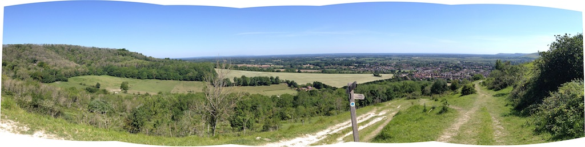
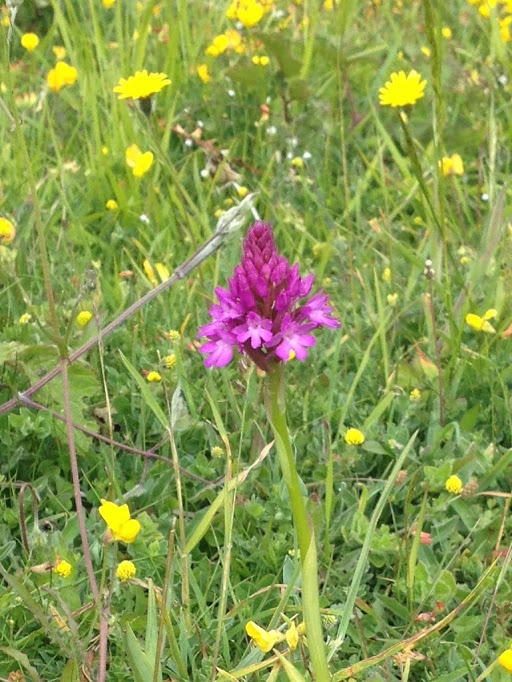
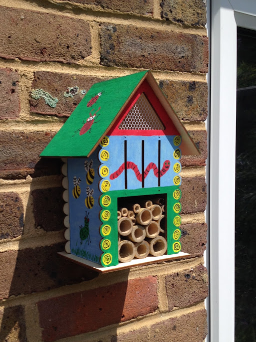
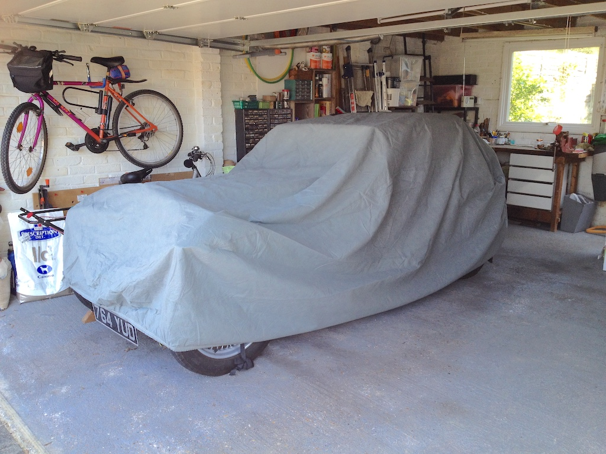

Angela seems able to wake up at this time every morning. She doesn't like lying in bed and so immediately gets up. I, on the other hand, like the warm, snug feeling of a bed in the morning and the period where you can drift in and out of sleep. Usually I get up about 15 minutes later, unless I fall asleep and Angela wakes me to say that breakfast is ready. This means that by the time I get down (still bleary eyed) the porridge will be only warm. We're a little set in our ways over breakfast. Fruit juice, porridge (I like a little demerara sugar and raisons on mine), toast with home-made marmalade and tea. Every morning.
By this time we've washed or showered and dressed for the mornings activities. Should I start dismantling the TC's carburetters or go for a walk. I need to check that the petrol level in the jets is at the right level and the same for each, but we've not been for a walk for the past couple of days, so perhaps I could start work in the garage when we get back.
Our little house has a twitten along one edge of the plot. It goes up (including 102 steps) to a road that then goes up further and on to paths that go up further still. So walks on the Downs are easy, if somewhat tiring. Today we walked through other twittens, across the cricket field, up the edge of the Rifle Range, then up and around the Upper Horseshoe. We returned down the 102 steps. This set of photos was taken about two thirds of the way to the top.
We've seen many common spotted orchids on our walks, but today we noticed that the pyramidal orchids are starting to bloom.
Of course, when we got home it was time for a mug of coffee, sat in the garden in the sunshine.
Now, do I have time to start work in the garage before lunch? Perhaps I had better finish cutting pieces of bamboo for Angela's insect 'hotel' and fix it to the garage wall. It was built from a kit that we had intended making with one of our grandchildren. However, we soon discovered that, even though it was marked suitable for age 5+, it would have been difficult for an 8-year-old to make. Firstly, the holes in the plywood pieces were too small to take the wooden dowels that, with glue, hold the pieces together and, secondly, the holes did not quite line up! However, they may have enjoyed painting it, if only they had been able to visit us.
Time to start preparing lunch. We only had enough home-made bread for toast tomorrow morning and had run out of bought rolls, so we put some part-baked rolls in the oven. Before I retired I would get up first and make breakfast, then Angela would make my lunch while I got ready for work. Now Angela gets breakfast and I usually prepare lunch. However, we are pretty boring when it comes to lunch. We like to start with a few grapes, have sandwiches or rolls filled with cold meat or cheese and some crunchy lettuce, then cake and a piece of fruit. Finally a mug of coffee. We have also got into the habit of eating lunch while watching the one o'clock news, today very much dominated by Covid-19 relate events.
With our daughter and two grandchildren in Northern California and our son and a granddaughter in the Netherlands we usually do two or three online Dutch lessons after lunch. Unfortunately I have difficulty remembering vocabulary from one question to the next, let alone from one lesson to the next. We have given up trying to learn American.
So now it's time to get on with the more substantial jobs, such as those on the TC. However, the weather is fine and dry, whereas rain is forecast for tomorrow. So perhaps I should do outside jobs, such as removing weeds from the block paving that makes up our drive. Using the same argument I'd started the work on it yesterday.
Time for a mug of tea. I'd cleared weeds from another section of the drive using a wire brush on the end of a long handle and I was in need of some refreshment, so we sat in the sunshine in the garden and drank tea.
Back to the front of the house to remove weeds from another patch of the drive and then to brush sand into the joints of the cleaned area. Perhaps one more session will complete the work.
Time to go in and prepare a starter for dinner, a slice of melon tonight. Perhaps I'll get into the garage to work on the TC tomorrow and perhaps soon I'll be able to take the car for a drive.
For some reason, since lockdown we've tended to eat dinner a little earlier, so by now we have eaten and washed up. The rest of the evening is spent watching 'live' TV or watching a programme on 'catch-up', along with other things such as reading, sudoku and updating my journal, often at the same time. Since I retired I've made notes on each day's activities. It's too grand to call it a journal, it is really just a memory jogger. Initially I imagined that I would record profound thoughts, but no, each entry is little more than a list. This includes, of course, work I've done on the TC, but not today.
After the evening news programme it's time to make a mug of hot chocolate before bedtime. Perhaps that's why I often need to get up during the night!